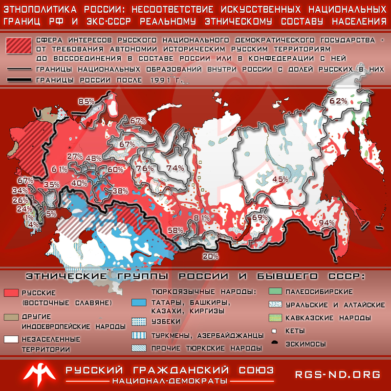

Дополнения
Я не собирался продолжать тему нацдемов, и так все ясно. Но в ЖЖ тема обсуждается, актуальна, так что добавлю с минимумум пояснений.
М. Калашников: ЕГОР, МОНОПОЛИИ НА НАЦИОНАЛИЗМ У ВАС НЕТ
http://m-kalashnikov.livejournal.com/1004634.html
Мой ответ товарищу Холмогорову. В самом деле, пора расставить акценты.
Итак, Егор Холомогоров посвятил мне следующие строчки: «Впредь я буду руководствоваться в отношении к нему восприятием его как человека, допустившего как уже многократно отмеченное участие в грязной пропагандистской войне против русских националистов (а стало быть и против русского народа), так и сознательную и довольно дурно пахнущую ложь в мой адрес…»
Бурная реакция связана с тем, что Максим Калашников назвал так называемую «русскую национал-демократию» проектом как минимум Кремля под управлением Стаса Белковского. Ну, Егор, коль ты перешел на такой язык, то вынужден тебе ответить. Ибо обстановка того требует.
ВЫ – НАЦИОНАЛИСТЫ? ВЫ – НАЦДЕМЫ!
Во-первых, давайте разберемся. Вы норовите объявить себя националистами. Единственными и монопольными. На самом деле, вы – национал-демократы. Или национал-либералы. Причем многие из вас – просто национал-либерасты. А национализм бывает разным. Это как разновидности птиц. И если вороны, скажем, объявляют птицами только себя, это – не истина в последнкй инстанции. Есть ведь и орлы. Как минимум.
Национализм изобрели не вы, и не вы – единственные его адепты.
Второе. Никогда не скрывал своей ненависти к нацдемству. Ибо по моему глубокому убеждению, национализм совместим только с социализмом. Кроме того, я глубоко презираю «уменьшительных националистов», которые начинают бесноваться при слове «империя» и призывают к конфедерализации остатков России (ее первый распад был в 1991-м). Ибо Россия (Русь) была империей изначально – и будет ею впредь. С моей точки зрения, нацдемство – это изощренный антируссизм, отводящий энергию русских в ложное русло и на ложные цели. Писал об этом много и повторяться не собираюсь. Выдавать мое неприятие «НД-юков» за враждебность русскому национализму как таковоиму – откровенная ложь. Ненавижу гайдарочубайсоидов в националистическом камуфляже – но буду всегда на стороне русских НС.
Кстати, не трясите Манежкой. К Манежной вы все (и НД-юки) имеете лишь косвенное отношение. Ваше реальное влияние – около нуля. Манеж был спонтанной акцией фанатов, попытки же НД-юков повторить его ни к чему не приводят. Ибо главный виновник русского геноцида – существование мародерской системы, сложившейся с 1991 года, а не Северный Кавказ.
Третье. Сообщество НД-юков и сам проект «Нацдемы» был оформлен и профинансирован как с Запада, так и из Кремля, причем организатором и диспетчером средств был без преувеличения талантливый Стас Белковский. Я об этом писал.
В марте 2008 года Институт национальной стратегии Станислава Белковского выпустил номер "Стратегического журнала" с темой номера: "Апология национализма".
Этот момент и можно считать точкой масштабного запуска проекта "русские нацдемы". Проекта, каковой, по моему глубокому убеждению, постараются использовать как ельцинизм-2. (Пишу: "постараются" - а не сугубо-утвердительно). Пока нацдемов на низовом (вульгарно-толповом) уровне успешно превращают в национал-либерастов. Тех, кто совмещает два "отстоя": принцип гайдаровщины в экономике и расовой чистоты в политике (Гиммлер плюс Гайдар-Фридман).
Вспоминая эту дату, гляжу на лица идеологов новой русской национал-демократии.
ВАША УЯЗВИМОСТЬ И ОЧЕНЬ ИЗБИРАТЕЛЬНЫЙ «НАЦИОНАЛИЗМ»
Напомню, что у Белковского тогда были средства и на аренду дорогущего офиса на Дмитровке (Пушкинской), и на финансирование сайта АПН (Крылов там зарплату получал), и на выпуск недешевого журнала. Это – затраты, измеряемые как минимум сотней тысяч зеленых бумажек в месяц. Откуда денежки были, Егор? Бабушки жертвовали? Мальчики националистические от стипендий отрывали? А на чьи деньги сегодня те же «Вопросы национализма» издаются? Сколько стоит выпуск журнала – я знаю сам. Кстати, Егор, а сам твой сайт «Русский обозреватель» на какие денежки существует, не просветишь? И твоя зарплата в нем в пятизначной цифре (ежель в рублях считать) – откуда? Откуда у «Русского обозревателя» средства на гонорары? На какие шиши существуют крыловы, сусины, храмовы, сергеевы?
Я отвечу: вы все ходите в АП РФ. Вы все ходите к Суркову. Вы – марионетки. В свое время, Егор, наше «Нейромир-ТВ» вместе с ИДК скооперировались в «Народным собором» для борьбы с мерзостью ювенальной системы. Мы просили тебя поместить наши материалы на «Русском обозревателе». Помнишь, как ты сказал нам, что на Старой площади тебе посоветовали не ругать ювеналку? И ты взял под козырек. Ибо музыку заказывает всегда тот, кто … девушку ужинает. Тебе приказали не трогать тему ювенальщины, которая равносильна растлению и геноциду русских – а ты подчинился.
Между нами, Егор (Максимом Калашниковым – и вами, вкупе с НД-юками) есть существенная разница. Я не ем с руки Сурковой. Финансовую базу мне обеспечивают гонорары от почти трех десятков книг и самостоятельное зарабатывание денег на двух работах. Конечно, я от этого зверски устаю, у меня нет времени ходить по многочисленным тусовкам-говорильням и митингам. Но зато я независим от АП РФ. А вы туда за ЦУ и сладким бегаете. Ибо сами вы не смогли создать ни своей яркой, пользующейся спросом, литературы, которая могла бы приносить вам доход. Ни своей телекомпании. Оттого и приходится вам кормиться от сил, которые бесконечно враждебны всему русскому.
Потому вы – марионетки. Хоть вы сто раз объявите себя русскими националистами. Ибо водят вами … х-м… внешние инвесторы. И это не только тебя касается, товарищ Холомогоров. Крылов с компашкой «профессиональных русских» – там же крошки-зернышки клюют. По той же причине «идеологи» НД-юков и на ТВ регулярно мелькают. А договор с дьяволом имеет свои издержки. Душа-то ваша истлевает.
В этой зависимости от Старой площади – ваша уязвимость. И национализм потому у вас получается избирательный. Те, кто финансирует все эти «русские националистические» журналы и сайты, прекрасно управляют новоявленной нацдемовщиной и через нее пытаются (небезуспешно!) манипулировать глупыми мальчишками. Главное ведь – натравить необразованную молодежь на чурок, оставив безнаказанными главных виновников русоцида. Ненавижу НД-юков, которые на деле раскалывают русских и превращают их в национал-смердяковых.
Пишу все это с горечью. Но коль Егор Холомогоров заговорил таким языком – отвечу тем же. Максим Калашников следует своим курсом. А вот чьим курсом идете вы? Не нужно никаких-то «очернительских кампаний» против таких вот «русских националистов». Достаточно сказать правду.
Еще раз напоминаю: вороны могут объявить себя единственными птицами на свете. Но от этого другие птицы не исчезнут. Монополии на русский национализм у вас нет.
dumyneveselye:
2011-09-11 04:58
Холмогорова вообще читать невозможно без того, чтобы не возмущаться. Вот он пишет :"Дело в том, что принцип русского национализма - и национал-демократии если хотите, - это абсолютный приоритет права. "
Это полнейшая ЛАБУДА. в ОДНОЙ ФРАЗЕ он ухитрился поставить знак равенства между собой (нац-демократией, а ЕСЛИ НЕ ХОТИМ???) и русским национализмом (что он под этим понимает???), но и этого ему показалось мало -- он постулировал НЕКИЙ "ПРИНЦИП" , КОТОРЫЙ ЯКОБЫ ПРИСУЩ русскому национализму. И этот принцип (по Холмогорову) -- это " абсолютный приоритет права" !!!
Вы только послушайте как знучит! Масло маслянное!
Приоритет абсолютный ... чего? Права ! Над чем????
Над чем приоритет?
По моим понятиям в основе русского этноса ВЕКАМИ ЛЕЖАЛО НЕ "ПРАВО" , а понятие ( категория) СПРАВЕДЛИВОСТИ, К КОТОРОЙ УЖЕ пристраивались такие основополагающие чертю нашего этноса, как русская мораль и русская нравственность.
И вот на этих принципах и только на этих РУССКИХ НАЦИОНАЛьНЫХ ПРИНЦИПАХ МОЖЕТ СТРОИТьСЯ РУССКИЙ НАЦИОНАЛИЗМ.
А на принципах " приоритет права" может строиться какая-либо другая , а именно нерусская цивилизация . Мне всё равно, кем были предки Холмогорова ( и какая бабушка его воспитывала), но то, что ОН ПОЛУЧИЛСЯ НЕРУСь, это мне очевидно.
Стоит ли с ним далее вести дискуссию? Не знаю. Не понимаю зачем.
dbbeast: 2011-09-09
Мне Холмогоров не брат и не сват, что там про него Калашников пишет, мне всё равно.
А вот про "Крылова и Ко." - так получилось, что мне известно, на какие средства они живут, так что тут Максим явно лажанулся. Но ложка дерьма, как известно, превращает бочку мёда в дерьмо, поэтому: фуфло. (Заметь, я нигде не говорю, что Крылов - тру-националист, или нацдем - круть, я лишь говорю, что Калашников соврал).
Кстати, зацени у того же Калашникова: Павел Зарифуллин - координатор Движения по защите прав народов заявил, что от экономического кризиса и межнациональных конфликтов Россию и мир может спасти только Русский Социализм. Эта идеология была сформулирована русскими народниками в XIX веке. Она учитывает этническую и социальнцю идентификацию человека. Она примиряет народы, классы и государства. (???)
darkhon: А тут все просто: понятно, что пост Калашникова здесь -- не аналитический, а больше эмоциональный. И вопрос "на какие средства живете" мне пофиг, я перепостил из-за "нацдемы -- это НЕ националисты". И дело не в личных гонорарах, а именно что в "Те, кто финансирует все эти «русские националистические» журналы и сайты, прекрасно управляют новоявленной нацдемовщиной и через нее пытаются (небезуспешно!) манипулировать глупыми мальчишками".
Что касается Зарифуллина, то это ты к чему конкретно? Социализм от народников XIX века -- это надо бы посмотреть обоснование, я по ним не специалист, но очень сомневаюсь. Уж очень уних клин был на православии и т.п.
Что "от экономического кризиса и межнациональных конфликтов Россию и мир может спасти только Русский Социализм" и с тем, что социализм "примиряет народы, классы" -- тоже согласен (с примирением гос-в есть напряженка, пока есть капиталистические).
dbbeast: Вообще, спор о терминах бессмысленен. Но просто чтобы зафиксировать точку зрения: нацдемы an_mass - всё же националисты, т.к. тоже желают блага Русскому народу. Другое дело, что их понимание, что есть благо, само по себе кривое [кстати, тут ещё неплохо бы разделять: нацдемами _называют_себя_ и Севастьянов, и Широпаев].
Но сраться из-за этого до хрипоты вместо того, чтобы поискать общие точки, и подумать, что можно сделать вместе для достижения целей, которые _тактически_ совпадают, например: отмена 282, свобода собраний, честные выборы, регистрация Русской партии и т.п. - это, мягко говоря, неконструктивно (и распыляет ресурс).
Ещё раз (и наверное, последний, т.к. тема флеймогонная, а мне это не нужно): за все "журналы и сайты" не скажу, но конкретно по Крыловскому РОД и "Вопросам национализма" _знаю_, что финансируются они "с миру по нитке", и "заказывать музыку" там просто некому. Конкретно у Крылова велико очарование национализмом малых европейских наций (к которым Русские ну никак не относятся), но клинит его на эту сторону, по-моему, искренне.
"Что касается Зарифуллина, то это ты к чему конкретно?" -- Мне показалось, или здесь идёт а) забалтывание термина, б) попытка опять подписать Русских на строительство "рая для народов"? Ну и насчёт примирения классов не понял, как это, наверное, какие-то не те классы имелись в виду.
darkhon: "Другое дело, что их понимание, что есть благо, само по себе кривое"
_Настолько_ кривое, что уже противоречит. Это как с христианством -- да, православный может быть националистом, но если он ратует за теократию, чтобы все молились, постились и каялись, а всех остальных неправославных надо холокостировать и т.п. -- то ни хрена ли не националист, лишь прикрывается национализмом.
Вот и с нацдемами ровно то же -- прикрываются.
Хотя, разумеется, надо отличать Севастьянова от Шировпаева (поэтому термин "нацдем" я не применяю к Севастьянову". А то, по такое логике, и всяких кошкодавов надо сатанистами называть, -- мол, у них просто понимание кривое.
Общих точек с нацдемамы быть _не может_. Это как с полицаями.
binf: Холмогоров в ответ разразился гневно-эмоциональным срачем
http://holmogor.livejournal.com/4534070.html
а Крылов стал яростно бить себя в грудь "дык я бессребреник блеать!"
http://krylov.livejournal.com/2299008.html
Зря всё же Калашников запел старую песню про источники финансирования: абсолютно не существенный вопрос, лишь повод для словесных выкрутасов про неподкупность. В остальном же контраргументы опять сводятся к потоку сознания плюс "Вы не делаете ничего" "не говорите об угрозах" "не выдвигаете политических требований", "а потому вы не трушные в отличии от нас, трушных" -- и это в ответ на аргументированные обвинения в именно _политической и идеологической_ несостоятельности. Создаётся впечатление, что митинги и акции РОД для Крылова не более чем пиар.
darkhon: Калашников, конечно, зря подставился таким образом, надо было аккуратнее. Скажем, я согласен с его тезисом "если я что продвигаю, то финансирование этого я возьму от кого угодно". Суть в другом: пофиг, что поалтил Белковский -- если бы продвигалось то, что нужно. Но вот сам сегодня смотрел журнал:
Апология национализма: стратег. журн.: №3 / - Москва: Институт национальной стратегии, 2007. - 554 с.
Редакционная коллегия номера: С.А. Белковский, К.А. Крылов, М.В. Ремизов
И там статья Белковского: "Национал-оранжизм как стратегия русского движения".
т.е. тут уже не просто "я получаю деньги за то, что сам продвигаю", а именно что "помогаю продвигать оранжизм". И тут либо продажность "за денюжку параллельно и такое оформолю", либо осознанная поддержка.
"митинги и акции РОД для Крылова не более чем пиар" -- Именно.
Если посмотреть по сути: ну таки да, кому-то в чем-то помогли. А толку? Кто-то из тех, кому помогли, стал националистом, занялся активной деятельностью? Не припоминаю.
Может, помогают тем, кто заранее сам занялся активной деятельностью в защиту русской нации? Нет, этим занимается "Русский вердикт", причем без всякого размахивания лозунгами "мы -- за русских!". Сейчас вот Тесак еще пытается тоже в этом направленни работать.
Помнишь случай с Аней Бешневой, когда гастарбайтер изнасиловал и убил? Тогда "профессиональные русские" делали митинг. А "просто русские" (я лично в том числе) поделили район на части, обошли и тщательно отметили места, где могут жить нелегалы - незапломбированные подвалы и т.д. Потом обработали информацию и нанесли на карту. Сейчас, увы, участковые не те, что раньше. Следствию это весьма помогло в розыске.
А уж хождение на митинги, когда точно известно, что "примут" -- это совсем наглядно. Профессиональые "несогласные", ага. Вот еще в тему.
binf: Ага. А то, что они всенародно брешутся с Белковским -- так это вроде как им же на руку, а потому не показательно. При людно брататься с жидом означало бы совсем уж ниже плинтуса, вот они и поспешили так сказать отмежеваться.
"поделили район на части, обошли и тщательно отметили места" -- Ну дела! Не далее как в июле ровно тем же самым занимались у себя в Смоленске -- полиция потом схроны искала по нашим меткам. Прямо как в соответствующем квесте в Dragon Age, где гг отмечал логовы малефикаров :-)
П. Святенков: Охлобыстин и Глаз Ужаса
http://www.apn.ru/publications/article24876.htm
Сразу говорю, что я выступление Охлобыстина не смотрел. Жалко полтора часа на политику (я вообще плохо воспринимаю "с экрана", мне в письменном виде подавай), я лучше "Интернов" гляну с ним же в главной роли. Сейчас, правда, уже есть стенограмма -- сейчас почитаю... Но Святенков любезно пояснил. что именно не понравилось нацдемам в "Доктрине 77", с этого и начнем.
"...почему эта идеология – антирусская? Не преувеличиваем ли мы, не клевещем ли на хорошего человека, честно пытающегося разобраться в тайнах нации, империи да и собственной русской души? Полагаю, что нет. Ниже мы покажем это. Перейдем же к рассмотрению охлобыстинского текста".
Далее Святенков ерничает над цитатой: «Империум – образ мысли, освобожденный от временных и социальных условий, польза утверждений при построении империи, как единственной ограниченной формы государственного устройства России». Мол, это все из игровой вселенной Warhammer 40000. Ну да; и я думаю, что аллюзия вполне сознательна. Империум против еретиков, ксеносов (чужих рас) и мутантов. Что вы имеете против, если учесть, что "еретики" здесь не "аольнодумцы", а именно что предатели человечества? Лучше так, чем предательство человечества, как в "Аватаре". И ситуация у русских сейчас ровно такая же: единство против внешних и внутренних врагов (в т.ч. и тех, кто претворяется своими), или смерть.
Святенков изгаляется: "похоже, из Вселенной Warhammer 40 000 состоит добрая половина речи Охлобыстина. Вот, например, про угрожающие нам опасности" -- но даваейте почитаем, что именно цитируется?
"Противостояние Запада и Востока окончательно нарушит экологическое равновесие Земли. Европа, регулярно затопляемая наводнениями (но по факту же!), начнет стремительно терять свое могущество и высказывать свои симпатии России. Наши алчные до интуристской культуры правители приложат все усилия, чтобы английский язык вскоре стал вторым государственным языком.<…>
К этому времени в Европе вторым государственным языком станет арабский. И в нескольких европейских странах, доступ к заветной ядерной кнопке получат не склонные к подростковой рефлексии представители стран тюркской группы. Люди целеустремленные и способные к жертвенному поступку.
Америке это не понравится. И она по старой привычке попробует угрожать. После серии несильных, но чувствительных обменов стратегическими ракетами Америка успокоится. Воевать-то она не умеет! Займется своими биржевыми манипуляциями, остатками былой роскоши. Потому что ее валютный рынок обрушится вместе с потерей влияния на Европу. А работать руками американцы не привыкли. Все производства в Азию переносят, еще сильнее ее делают".
Ну и? Что толку от "Не правда ли, стилистика одна и та же? Заменить «Глаз Ужаса» на американцев, «извращенные орды Хаоса» на китайцев, «тиранидов» на европейцев – и текст Охлобыстина готов. Не надо даже ничего редактировать – стандартная пугалка для дураков, ноги которой растут из западной фэнтези, готова". Лучше бы Святенкоы не напрягал свое чувство юмора, а пояснил бы аргументированно, в чем Охлобыстин не прав?
Далее: "речь не столько о вселенной Warhammer 40000, ставшей, по всей видимости, источником вдохновения для сценаристов Охлобыстина. Актер-священник озвучил несколько важных и совсем несмешных мыслей о русском народе. Среди потока фэнтезийных миражей вспыхнул «мессидж», реальное послание к русскому народу, которое хотели озвучить те силы, которые стоят за Охлобыстиным (я сейчас не о Глазах Ужаса, как вы понимаете). Приведу несколько важных цитат":
"1) Русский не умеет жить для себя. Когда он молится в храме, он молится за весь мир. Когда он выходит на встречу к врагу, за его спиной – все человечество. Русский рожден быть героем или святым! Посередине – ничего нет!
2) Итак, сама суть: за короткий промежуток времени десятки племен венетов, антов, полян, древлян, радовичей, вятичей и т.д. вплоть до сорока кровей, до этого активно мигрировавших по материку, смешиваются в единый этнос.
3) Столь же губителен национальный апломб: мы лучшие, потому что мы русские… Фантастическая чушь! Мы не лучшие, мы – русские – ИНЫЕ!
4) Как это ни печально – славянам не по пути с остальным миром. Вся история моего народа – этому подтверждение. Эпохи экономической стабильности делали русский народ инертным и приводили к вопиющей нищете. Эпохи политической стабильности заканчивались самоистреблением. Эпохи благопроцветания сталкивали русскую нацию в пропасть саморазложения.
5) Надо признать, что на данный момент мы даже не имеем возможности заявить претензию, если она имеется. Определение «мы» для нас не подходит. Так — несистемные реакции на явную несправедливость на фоне общего нежелания жить по законам других народов. Не смирившись с этой простой, одной из тысяч простых истин, не признав, что русского народа сейчас нет, и традиций толком никаких, кроме водочного ужора, нет, не найдем мы выхода!
Лично у меня претензия лишь к пятому пункту: очень нечетко на тему "русского народа сейчас нет". Я категорически возражаю против "русские -- это еще не нация" (между прочим, продвигается нацдемами, и что-то я не припоминаю возмущения Святенкова на эту тему), но в контексте вполне может быть, что имелось в виду нечто вроде "должно быть не аморфное "мы", а единение нации на метафизическом уровне, тогда будет и практический результат". Не знаю, имелось ли это в виду, но я текст вижу так.
А вот Святенков воспринимает сказанное как-то странно: "Здесь – сердце, содержание его речи. Каково же оно, если изложить его простыми словами? Русские – метисы, сборище сорока ушедших в историю племен". Оригинально-с. А что, племен не было? Русские племана объединились в единый большой этнос, а затем построили государство и стали нацией. Откуда взялись метисы?
"Русские не должны гордиться русским именем и своим народом" -- а это где в процитипрованном? Как раз наоборот: великая русская нация сейчас деградирует, надо гордиться предками и возрождать нацию! (а нацдемы ведут агитацию против того, чтобы гордиться как минимум соверским периодом)
"И, наконец, главное, смысловой центр выступления Охлобыстина: никаких русских - нет. И потому русские ни на что не имеют права. Не имеют права даже выдвигать претензий к кому бы то ни было. Так вот для чего велась шумная рекламная кампания. Вот для чего говорились слова о выдвижении Охлобыстина в президенты. Для того, чтобы с трибуны Лужников бросить в лицо русских одну-единственную фразу: «Русские – вас нет и вы ни на что не имеете права! Заткнитесь!»" -- редкостная бредятина, "чтение наизнанку".
А вот что интересно -- это как речевой оборот "мы даже не имеем возможности заявить претензию" Охлобыстина раскрывается Святенковым: "Не имеют права даже выдвигать претензий к кому бы то ни было", и в конце статьи: "для русских сейчас главное – не ловиться на ложь и пропаганду и четко понимать, что русские есть, что у нас, русских, имеются права и мы можем их реализовать в форме создания своего государства".
Не буду претензовать на телепатию -- не знаю, что именно хотел сказать Охлобыстин, но Святенков четко и ознозначно понимает "права" в смысле "права имеются". Нет, неуважаемый нацдем! Если права "имеются", то у кого-то, у хозяна, который их дает. Права надо завоевывать и затем даровать, а не брать. На этом фоне показательно и "создание своего государства": позвольте, у русских есть свое государство, Россия называется. Его не надо создавать, надо менять "элиту". Любое создание иного государства -- это уменьшительство, "кусочек откусить".
И возмужение Святенкова направлено именно против Русской Империи, единственной формы, в которой может существовать и развиваться русская нация.
Процитирую Охлобыстина:
"Империум – образ мысли, освобожденный от временных и социальных условий, в пользу утверждений при построении империи как единственной органичной формы государственного устройства России. Чистая логика человека, мыслящего категориями тысячелетий, чувствующего на себе ответственность за весь мир".
"Подарите своим детям сказку о прекрасном будущем, о великой империи, которую мы, русские, обязаны построить, которую мы должны созидать на пепле прошлого. И наши дети будут пересказывать сказку своим детям, а те – своим, пока сама сказка не станет былью. А она ею станет".
"Только единомыслие народа по этому вопросу, по созданию вопроса идеального общества, создает необходимый фон для обретения личного счастья. И единственным решением разумно считать строительство могучей империи... Империи, гарантирующей выполнение нашим народом ...задачи – защиты мира от самоуничтожения. Это и есть общая мечта. Только с высоты этой задачи русскому человеку доступно рассуждать правильно. Только в контексте этой задачи русский человек может считать себя русским. Такова логика Империума. Образу мыслей людей, стремящихся к счастью и процветанию своего народа. Опять же, это и есть общая мечта".
Не буду много цитировать, ссылку я дал, да и сплишком много у Охлобыстина про бога, РПЦерковь и т.п., да и не со всем я согласен; но суть выступления -- именно в необходимости построения Империи. Русской Империи, а не "руспублики" с общечелоческими ценностями.
Да, русские -- это не Запад и не Восток. Мы -- ИНЫЕ. Будущее принадлежит нам!
А вот Крылов, у него вообще там истерика, обсуждать смысла не вижу. Вот, скажем: "Cлавянам не по пути с остальным миром. Эпохи экономической стабильности делали простой русский народ инертным и приводили к вопиющей нищете. Эпохи политической стабильности неизбежно заканчивались самоистреблением. Эпохи благопроцветания сталкивали русскую нацию в пропасть духовного разложения".
Ну да -- несколько эмоционально и поэтому слегка слишком. Еще хорошо бы не забывать, что русским свойственно ударно трудиться и так же отдыхать, а не по расписанию. Но Крылова аж клинит: "Русским не надо денег: сломают и испортят. Русским не надо хорошей жизни, русских от хорошей жизни мрут как мухи. Русскому дашь конфету - сразу дрыг и в могилу. А от пиздюлей да голодовок - только крепнут. Такой уж народ". Ну и т.д., хотите -- почитайте, но смысла там нет, одни эмоции.
iter_ignis:
Кургинян называет вас "уменьшительными националистами", но более верное название - националисты женского начала.
Охлобыстин проповедует мужское, агрессивное, растратное. Крылов - женское, охранительное, пассивное. Причём, мелкое такое женское: "ах, ах, Петенька, положи ножичек, уколешся-поранишься! ах, не ходи во двор, там злые мальчики! ах, главное - хорошо кушать, а ты всё книжки читаешь!"
Мужчине тошно слышать всё это кудахтание, да ещё приправленное склочностью и мелочными дрязгами. Но, блин, куда без этих баб. Пусть кудахчут, пусть заботятся, тоже нужно. Но также нужно вовремя осадить, а то эти бабские заботы без мужского управления что угодно превратят в ясли-сад.
heofashist: Позиция Крылова это позиция врача, который смотрит на закованного в гипс человека(Русского народа), у которого не осталось ни одной целой кости. И в этом случае, прежде всего надо думать как выздоровить, и для начала встать наноги, а уж потом задумываться о прыжках с парашютом, да рекордах на 100-метровке.
iter_ignis: Так, да не так. Порвали нас хорошо, но кости у нас целы, нечего всякому нытью потакать. Может быть даже целее, чем у многих. И сил достаточно, если собраться. А если сидеть причитать про болезность свою, и что нужно зарыться в грядку и тупить в миску, пузико отъедая, то ни огородной русской республики, ни большой империи не получиться. Охлобыстин правильно говорит: "русский - это воин, и для войны он сделан". Когда мы не воюем, мы деградируем, и никакое кудахтание тут не поможет, разве что превратит нас в сытых бюргеров, о чём мечтает Крылов, которых охотно слопают те же англосаксы.
heofashist: Ну не скажите.
Генофонд Русского народа пострадал жестко. Это и Гражданская война, и коллективизации-голодоморы, и Отечественная война где выбило десятки миллионов не самых плохих представителей народа.
Плюс духовный геноцид, во время которого было напрочь похеренно наше Русское естество, и мы стали превращаться в денационализированный плебс, всех этих совков -россиян. Отсюда и духовное и физическое вырождение народа, пик которого пришелся на 90-е.
Мы вымираем. Нам жидкий бульончик нужно кушать, а не влазить в очередную мировую авантюру где можно погеройствовать.
А когда силенок накопим, тогда уже можно будет помечтать об империях. Мы уже скоро век как воюем без перерыва.
iter_ignis: Не спешите говорить про генофонд. Когда человек работает, он тратит тело, и получает опыт. Когда народ работает, он тратит людей и тоже получает опыт. Те войны и те испытания, которые боги послали нам - это величайший опыт. Возможно, самый великий на планете. Кто ещё, например, сходился в битвах с участием миллиона человек? Кто ещё успешно противостоял всей технологичной Европе, имея с большего аграрную страну? Победив в такой войне и потом рванув в космос? Колоссального масштаба организованная работа, с высочайшим напряжением! Этот опыт никуда не исчез. Он ждёт своего часа.
Бойцы полного контакта на тренировках получают травмы часто и тренировки выматывают обычно. Это - нормально, и необходимо для закалки, как бы мамочки не охали-ахали. Да, народ встрял в драку, где проиграл позицию, получил несколько переломов, дышать тяжело, глаза заплыли кровянкой. Но если упасть ничком, как Крылов предлагает - всё, пиздец, затопчут. Отдышаться не получиться, только перегруппироваться, и в атаку. Не в последнюю, от безысходности, а в стратегически выверенную.
Есть такой лозунг у одних психов: "Абсолютная беспощадность - по отношению к себе!" Возможно, сейчас именно то время, когда он дать возможность выжить.
nazi80: //Те войны и те испытания, которые боги послали нам - это величайший опыт//
Вы это скажите матерям 18 летних пацанов которых убили в Чечне. А еще лучше - инвалидам - 25-30-летним парням подойдите и скажите - да это ниче что у тебя глаз нет или ног - главное опыт бля. Величайший на.
iter_ignis: Вы можете хоть захлебнуться в своих праведных соплях, но через десять, двадцать, сто, тысячу лет, когда все эти личные страсьти-мордасти уже не будут сколь-нибудь важны, только опыт и только свершение будет иметь значение. Как никто не заботится о страданиях рабов на строительстве, например, римского Капитолия. Капитолий просто крут, без него цивилизация была бы беднее, он остаётся. Остальное - было и прошло.
Именно потому, что наши предки могли не распускать сопли, как подобные вам, а делать, превозмогая свои страдания, мы и имеем свои тысячелетия побед, чудеса света, космос, империи и великий Опыт, как сумму всего.
nazi80: Ну то есть я Вас правильно понял, для Вас страдания конкретных русских солдат, потерявших свое здоровье, есть ничто иное как "праведные сопли"?
А сами они "рабы"?
Вот он самый сок имперцев. Вот он самый цимес империи для русских. Не размазывать сопли и вкалывать как рабы. Больше Вам русским нечего предложить.
iter_ignis: Вы уже начали захлёбываться?
"Страдания конкретных русских солдат" - это только страдания. Они могут мешать ему выполнению долга, могут помогать. Здоровье солдата - важная составляющая победы, и расходовать его нужно аккуратно, и заботится о нём тщательно.
А "праведные сопли" - это не про солдата, а про то, чем вы тут заняты: пытаетесь сделать из чьих-то страданий фетиш типа-благородной пассивности и фетиш заботливой чувственности. Принять решение израсходовать 100 солдат сейчас, чтобы спасти миллион потом - это для вас невозможный выбор: мгновенные сопли-страдания мешают. А что потом миллион умрёт - это уже не ваше дело, это "объективные обстоятельства" и "ещё нужно доказать". Ваша близорукость кажется вам спасительной, но это становится ещё большей проблемой.
Это ВАМ нечего русским предложить, кроме уютненького национального загона с яичными пирогами. Мы строим памятники победам, вы - жертвам. У меня для них - богатства Вселенной, завоёванные своим трудом.
Но вы с такими настроениями обречены на подчинение, потому как не способны к дисциплине. Хоть зарыдайтесь, хоть заплюйтесь. Те из вас, которые на захотят быть рабами, должны будут стать солдатами и наплевать на страдания, если не струсят. А это уже совсем другой разговор.
nataly_hill: Если "русский - воин, и сделан для войны" - стоит ли так бояться, что прибежит Крылов и собьет русского с его природного пути?
Если уж русский создан для войны, значит, он себе свою войну всегда найдет и, куда приложить силы, придумает.
Вот только, чтобы прикладывать силы - надо сначала сил набраться. А этого-то вы (имперцы) почему-то и не хотите. Мысль о СИЛЬНЫХ РУССКИХ, о русских, которые могут САМИ найти свою судьбу и начать свою войну - вам ненавистна.
iter_ignis: 1. Вам удобно разговаривать с человеком, который в любой национальной озабоченности видит тень Гитлера? Я начинаю подозревать человека в слабоумии и лучшее, что могу ему предложить - соску с мёдом. Так же, когда пытаются запихать под ярлык "ымперец" всё, что пылкая душа пожелает. Включите мозг, граждане, если он у вас уже вырос.
2. Русские САМИ решили свою судьбу и однажды построили Империю. Тогда все хотели, да не многие могли. Мы - смогли. И мысль об это СИЛЕ, о СВЕРХ-силе, вам так ненавистна. Это вы хотите сделать из русских животных, сидящих в загоне, и жующих траву. Нам, имперцам, нужны сильные, самостоятельные, осознающие, трезвые, ответственные мужчины и женщины, чтобы поработить всю Местную Группу Галактик. Вам, для сидения на заднице у грядки, достаточно тупых жующих организмов.
3. Крылова никто не боится. Его пользуют, как форум, как доску почёта, или как оппонента, если снизойдёт до разговора.
synchrophase: Как раз наоборот - жить для себя и бороться за свое благополучие, плюя на навязываемую мораль жертвенности - это мужское начало, а "сгореть в танке за родину-мать" - это вышколенное подкаблучничество. В советском мире "трутень" - ругательство, там все должны быть рабочими пчелами без пола.
iter_ignis: Глупости. "Для себя" живёт тот, кто кроме себя ничего не знает. Как только подрастаешь, видишь целый мир: народ, империю, Расу. Чем больше душой человек, тем для большего он живёт. Ваша потреблядская позиция - оно не плохая, она просто незрелая.
silkasoft: Вообще-то Охлобыстин говорил, что русские потеряли мечту об империи. В этом он прав, потому что именно Империя и есть высшая форма существования любой нации.
Выжили только те народы, которые создавали великие империи. Вы слышком много общались с Белковским, это у него представление о прекрасном - маленькое, сытное жидовское местечко и чтоб погромов не было.
Нации, котрые думали о великом выжили, а те кто о том, чтобы сладко пожрать, поспать посрать, сметены на помойку истории. Жизнь не ради великой цели - бесполезна. "Москва - Третий Рим и четвертому не бывать", именно с таким лозунгом русские прошли от океана до океана и построили великую империю. Вот, собственно, о чем говорил Охлобыстин.
Нацдем из Лондона Джеффри Хоскинг
http://tor85.livejournal.com/1870241.html
Пишет Владимир Тор (Владлен Кралин): "Рекомендую, серьёзно интересующимся теоретическими вопросами национализма. Интервью с Джеффри Хоскингом, профессором Лондонского университета". И ссылочка на ресурс Широпаева, что показательно. Но что там пишет лондонский профессор?
Nazdem.info публикует интервью профессора Лондонского Университета, академика Королевской Академии Великобритании Джеффри Хоскинга, данное им лондонскому координатору НДА:
"В то же время он [Сталин] разрушал, как только мог, русские этнические традиции, прежде всего русские дворы, русское ведение сельского хозяйства, создавал колхозы, проводил раскулачивание, которое, в сущности, уничтожило самую крепкую часть крестьянства, самых трудолюбивых людей на селе. Всячески притеснял православную церковь. По-моему, это две самые значительные традиции русского народа, русского этноса того времени – это сельское хозяйство и церковь, а советское государство пыталось их уничтожить".
"...как только при Горбачёве союзные республики получили новые полномочия, то РСФСР стала очень значимым компонентом политической ситуации. Именно там аккумулировались идеи свободы и демократии. Именно российские политики стали локомотивом прогрессивных преобразований. В самый решающий момент – августовский путч 1991 года, Российская республика предотвратила коммунистический реванш".
"...надо отметить, что русские сейчас более образованные, чем в любой другой период истории, они гораздо лучше знают внешний мир, чем когда-либо. Это очень важно для сдвигов в сознании. Несколько сот тысяч людей живёт в Англии, или постоянно, или периодами; посылают своих детей учиться в британские школы и университеты. То есть русские – это уже «международники», они не живут за железным занавесом. И вот эти настоящие «новые русские» очень недовольны тем, что происходит, они не хотят возврата в прошлое. Они осознают, что государство Путина и Медведева неспособно провести модернизацию, о которой те постоянно говорят, что надо как минимум создать более крепкую правовую базу. Отмечу, что тут важна не столько национальная культура, хотя она имеет значение, но правовая база для развития экономики. Люди должны быть уверены в своём частном имуществе, в силе контрактов..."
Все понятно? А вот его книга, на которую тоже дает ссылку Владимир: Хоскинг, Дж. Россия: народ и империя (1552-1917) / Пер. с англ. - Смоленск: Русич, 2000. - 512 с.
"Тема этой книги - как Россия воспрепятствовала расцвету Руси, или - если хотите - как строительство империи помешало формированию нации"
"С 1932 года в паспорте каждого советского гражданина указывалась его национальность, а так как эту национальность нельзя было менять, эта категория была скорее биологическая, чем этническая". (шедеврально!)
"Успехи и катастрофы сталинизма наглядно обнажают парадоксы русского национального сознания. Несомненно, Сталин в некотором смысле был русским националистом, возможно, даже самым удачливым. Однако в другом смысле, как убедительно доказал Александр Солженицын, Сталин сделал максимально возможное, чтобы уничтожить всё исконно русское. При нём нео-Российская империя достигла своего апогея, как одна из двух мировых сверхдержав, тогда как русскую нацию низвели до состояния почти унизительного. Крестьянская община была уничтожена, русская православная церковь разорена, всё лучшее в русской литературе, искусстве и музыке подавлялось, а миллионы русских были лишены корней и брошены в новый "плавильный котел" индустриальных городов, где бок о бок жили разные этнические группы. И это уже не говоря об архипелаге ГУЛаг, где, по словам Солженицына, образовалась своя многочисленная "нация" зеков, нечто вроде карикатуры на пролетарский интернационализм. Весь опыт сталинизма ещё раз подтверждает то, что является тезисом этой книги: для русских имперское величие может быть достигнуто только ценой задержки в развитии нации".
В общем, вот хороший коммент, полностью согласен:
domety 12 Сентябрь 2011:
Ссылки на "настоящих русских", проживающих ныне в г. Лондоне Лондонской губернии и почти вот-вот готовых выехать в г. Москву Московской губернии наводить порядок пахнут чем-то нехорошим.
Я привык не брать у незнакомых взрослых конфет, а у англосаксов - их писанины на тему "Как нам обустроить Россию, чтоб уж не поднялась".
И еще раз о карте уменьшительного псевдонационализма
http://wind-lj.livejournal.com/287654.html
Тема уже затрагивалась, но некоторые решили ее повторить.
wind_lj: "один из многонациональных радетелей воистину запугал народ:
Пропаганда ТАКОЙ ВОТ будущей России должна заканчиваться пожизненным в мордовских лагерях.

Это он к тому, что "если создадут русские русскую республику, от страны останется огрызок..." Ну то есть нерусским свои национальные республики иметь допустимо (страна не развалилась, ничего страшного), а русским - "нельзя". Но если сказать, что "а давайте тогда объявим русских на государственном уровне государствообразующей нацией, раз не даете республику", то моментально раздаются стенания "обидятся и отделятся, останется огрызок".
Интересно, что это за "огрызок" - "такая вот будущая Россия"? Границы 16 века? Садовое кольцо? Нет. Просто смотрите и ужасайтесь - сам борцун за великую многонациональную державу решил попугать.
Страшно? "Запугаю" еще сильнее - на самом деле многие незакрашенные области (не входящие в гипотетическую "русскую республику") вполне можно закрасить.
Потому что в республике Коми я не видел ничего нерусского, кроме нескольких надписей на странном языке - даже фенотипические отличия не особо разглядел, и визуально Коми - значительно белее нынешнего Москвабада. r> И, тем более, Карелия с более 80% русского населения и русифицированными финно-уграми - что расово, что по менталитету их сложно отделить от русских.
Более того - карелы сами натерпелись россиянской "многонациональности"(напоминаю, что Кондопога находится в Карелии) и не советую любителям многонациональности идти к ним с проповедью великой евразийской идеи и толерантности - интересно, карелы сильно расстроятся лозунгу "Хватит кормить Кавказ!"? Или предложению остановить цветную иммиграцию?
А вот гораздо более реальная карта "огрызка в границах Московии 16 века" - спасибо nord_consul."
"Может использоваться как агитматериал РГС.
Особенно полезно показывать товарищам, которые утверждают, что мол если русские будут требовать себе прав или не захотят кормить Кавказ, то какой-нть Ямало-Ненецкий АО перестанет кормить русских (кстати на дебатах на РСН мне такой контраргумент неоднократно приводили).
Вообще у поцреотической шизы в последнее время мода обвинять нацдемов в сепаратизме.
Новизна данной картинки в том, что если статистику доли русских в нац субъектах ещё более менее приводят в дебатах, то карт с реальным расселением этносов практически нет на просторах рунета.
На данной карте хорошо видно, что исходя из географии расселения этносов в России, почти никто из них кроме разве что Тувы и Сев Кавказа (где русских насильно вытесняли) не имеет потенциала к сепаратизму: монолитно населённых нац республик нет, этносы расселены очагами, большое количество незаселённых пространств, особенно в богатых ресурсами северных субъектах.
Исходя из сказанного, единственный фактор сепаратизма национальных республик - это само существование национальных республик".

"PS: доля русских в нацреспубликах считалась путём сложения русских, украинцев и белорусов (по данным переписи 2002)
PPS: в связи с расово верными требованиями татарской общественности татары вместо группы 'тюркские народы' включены в группу тюркоязычных народов :)"
"Можно вспомнить о безнациональном региональном сепаратизме во вполне русских областях, но это - как раз именно следствие национальной и социальной политики государства - когда русские люди в России не чувствуют ни русскую гордость ("какая русская гордость?! полюби прежде всего драгоценные народы, а затем... и вообще - слово "русский" - запретно!"), ни социальную политику и поддержку государства - и именно поэтому возникает желание отделиться подальше - пусть поблагодарят поцреотов-"охранителей", а поцреоты передадут благодарности в органы власти.
А на карте прекрасно видно, что самый предел в самом наихудшем случае "обгрызания" - несколько нац. республик, мизерная часть территории - самый крайний радикально-экстремальный вариант (и то за который никакая политическая сила бескомпромиссно не выступает). Зато при государственном русском национализме очевидны перспективы воссоединения с куда более обширными прилегающими русскими землями. Так что любого, вякнувшего о "границах Московского княжества при власти русских националистов", можете посылать подальше в грубой форме".
В том-то и дело, что нацдемам пофиг Россия как сакральное понятие. Территория -- это, мол, лишь ресурс. Именно про это я писал: "Позиция-3: против «уменьшителей», за Русскую Империю", здесь повторяться не буду. "Немножечко России можно и отдать" -- это НЕ русская позиция.
Нация — это непрерывность этноса в государственности, связь со своими предками и тем, что они делали. Это не значит, что не надо восторгаться их ошибками. Но это значит, что нельзя херить их достижения. В частности — завоеванную территорию страны и стремление к ее имперской державной мощи.
tessey: одна только поправочка - это не я решил попугать, это переметнувшийся к ваш холмогоров предложил на полном серьезе. вот так вот и предложил, без Мордовии, и Карелии с ее Кондопогой.
wind_lj: Но ПОПУГАТЬ и представить это кошмарным ужасом решила ваша братия. А с финно-угорскими краями Холмогоров не доработал. Надо написать и предложить вторую карту.
tessey: попугать тем фактом, что такие карты вообще появляются.
причем у кого?! у идеологов ))) не доработали, фигня какая, пару-другую миллионов русских вышвырнули на х.й из России, говна-то... пи.дец...
я живо представляю, как вы на публике бы выступили с такой картой - ведь ногами вас русские люди забили бы. поэтому вам и светит одна полит-перспектива - быть маргинальными блоггерами, до самой старости.
wind_lj: Холмогоров не предлагал сводить к карте границы России. Это его карта РУССКОЙ РЕСПУБЛИКИ - типа, как у татар есть Татарстан.
Но среди поцреотов принято кошмарить "границами московского княжества" - а вон даже в самых страшных фантазиях выходит несоизмеримо больше.
tessey: от только не надо держать нас за лохов. а то мы не знаем, что начнется на территориях, которые вы из РР исключите. давно на дверях у русских не писали "убирайтесь в свою росию"? так вы до этого доведете.
я, бл.дь, живу на такой территории! и как же вы теоретики московские, нас, русских уже зае.али! я своим друзьям из казани ссылку на тот его пост кидал. "убили бы гниду нахуй!" был их ответ.
так что - Потьма-Явас для вас это предельно мягкий финал.
wind_lj: Странно, никакой русской республики не было, а в Чечне и в Туве все равно "на дверях написали". И еще страннее - Татарстан есть, а татарам в Москве на дверях не пишут "убирайтесь"
tessey: ну, давайте, добейтесь, чтобы это еще в Башкирии и Мордовии писать начали.
ты эти логические софизмы не мне, а дознавателю строить будешь. у меня с вами разговор длинным не бывает.
wind_lj: Неужто башкиры (и, тем более, мордвины), такие шовинисты, что считают, что на то, что позволено им, русские права не имеют?
А если мы без русской республики, а просто в конституции русских государствообразующим народом зафиксируем с соотв. выводами - что, тоже НАРОДЫ ОЗЛОБЯТСЯ? Уверен ведь, что найдется подобный "довод".
tessey: нехрена юлить и переводить разговор на конституции. речь о карте, ВАШЕЙ карте. которая ВАШИМ же кажется большой, вам и "размером с эстонию" достаточно. все, точка.
wind_lj:"Размером с Эстонию" говорил не я.
Впрочем, если где-нибудь на Средиземноморье образовалось бы русское государство по-настоящему народное хотя бы размером с Эстонию, но народное, туда бы народ с РФ ломанулся :-)
А изначально Холмогоров предложил просто - либо статус русских в конституции, либо РР.
tessey: не могу удержаться
чёж блядь не на карибах-то и уж прямо вот сразу оппа - и народное? ))) уж мечтать так мечтать!
но я могу вам еще меньше эстонии предложить, и с климатом более привычным, между Потьмой и Явасом. доебетесь там до мышей.
ershoff83: Если УМНЫМ казанским русским все объяснить, проблемы едва ли будут. К слову, что мешает руководству Русской Республики отстаивать права Русских на всей территории РФ? Руководство республик Кавказа, к примеру, уже давно этим занимается вплоть до покрытия этнопреступности соплеменников.
tessey: а ну да. это они по глупости не хотят, чтоб их за борт русской республики выставили. вот же дураки-то какие! ты им это тоже сказать не забудь.
ershoff83:Ну если им суть вопроса разъясняют такие как ты, то тогда удивляться не приходится)))
tessey: то есть готов рискнуть жизнями миллиона-другого русских ради холмогоровской фантазии, только потому что тебе кажется, что "да нибздо! все заебись будет!"? вот только от нас, русских, этой готовности не жди.
winston_smith14: Я русский человек и меня устраивает русская республика размером с Эстонию,при условии если она будет демократическая, в ней будет либеральная экономика и широкие личные свободы.
tessey: ты вырусь, а не русский. русские таких, как ты, на березе вешали, надо будет - еще вздернем.
размером с Эстонию? ))) что, wind_lj, "даже в самых страшных фантазиях выходит несоизмеримо больше"? видим, видим..
Нацдем К. Крылов "доблестно разгромил" имперца И. Охлобыстина
http://evolution-march.livejournal.com/330891.html
Да, к Охлобыстину немало претензий, я уже об этом писал, но Крылов-то предлагает другую крайность - гораздо более опасную для русских, всегда больше всех страдающих от развалов страны. Поэтому использую его же приём против него.
Крылов пересказывает Охлобыстина: "Русским не надо денег: сломают и испортят. Русским не надо хорошей жизни, русских от хорошей жизни мрут как мухи. Русскому дашь конфету - сразу дрыг и в могилу. А от пиздюлей да голодовок - только крепнут. Такой уж народ".
Пересказываю мнение Крылова: "Хватит пиздюлей и голодовок, даёшь хорошую жизнь! Поэтому нас должны оккупировать натовцы. Они дадут нам конфет, сколько захотим!"
Крылов пересказывает Охлобыстина: "Русским не нужна торговля, они копейки от рубля отличить не могут. Не нужна им карьера, не нужна власть. Не нужно всё это русским, не наше это, ох не наше. Русские - простодырые глупёздыши, лишённые простейших человеческих умений: торговать и управлять собой. Все это могут, а мы нет. Не дал нам Боженька таких умений. Всем дал, а нам нет".
Пересказываю мнение Крылова: "Мы умеем торговать, поэтому должны продать Родину, как это сделал сержант Глухов, перебежавший на сторону воюющей с Россией Грузии и получивший там квартиру. И демократическому самоуправлению нас научат тоже грузины".
Крылов пересказывает Охлобыстина: "Это центр всего. Русский не умеет, не смеет уметь, не смеет даже подумать о том, чтобы ЖИТЬ ДЛЯ СЕБЯ. Это запрещено. Кто пытается жить для себя, или хотя бы просто не голодать, не холодать, не лить кровь по чужому приказу и не нищенствовать - тот не русский".
Пересказываю мнение Крылова: "Русский умеет жить для себя - ведь для него материальные ценности превыше всего, даже Родины. Русский знает, что в России сохранять верность нечему. Ура сержанту Глухову!"
Крылов пересказывает Охлобыстина: "Вот что мы, русские, умеем – мучиться и жервовать, жертвовать и мучиться. Учитесь переносить физическую боль, ага".
Пересказываю мнение Крылова: "Русские не должны мучиться и жертвовать - им нужно возненавидеть и развалить свою страну, избавиться от имперских мук, перебежать на сторону НАТО и получить там по квартире - вслед сержанту Глухову".
И так далее...
Никакой клеветы! Все мои пересказы основаны на высказываниях Крылова.
Реквием по нацдемовской мечте
http://headshotboy2.livejournal.com/54906.html
Всем известно, что сердце "нацдема" склонно к измене. Вид красивых, демократичных и таких американских marines заводит любого "нацдема" не на шутку, и они уже не могут сдержать свою страсть:
- Вы смотрели американское кино? Там везде сытость, красота и справедливость, а главное, там нет кавказцев! Поэтому нам нужна оккупация НАТО! Надо не проебать этот шанс! Нас, русских, от Путина и Кадырова спасет НАТО! Мы будем жить в красивой европейской стране, НАТО даст нам власть, деньги, нефть, газ, технологии. НАТО даст русским власть!
Спешу остудить наших милых и податливых нацдемов. Никаким русским никакой власти НАТО давать не собирается. И вот почему:
- Русские, они, знаете ли, дурной народец... Склонны к имперству, любят размах... Вечно втямяшат себе в голову какую-нибудь глупую идею типа Третьего Рима, отнятия у турок Константинополя... А коммунизм? Это ж был просто пиздец! Забыв про колбасу, они решили устроить... Ох, лучше даже не вспоминать! Их надо тщательно поделить и не то что им власти не давать, нельзя вообще допустить, чтобы они голову подымали!
Управлять частями поделенной России будут... Да, да, дорогие мои, именно они - кавказское и азиатское зверье. Они хорошо физически подготовлены, обладают готовыми структурами управления - диаспорами, и им не обидно наблюдать за всем происходящим - это не их страна. Наоборот, чувство их национальной гордости будет петь - большой американский дядя поручил им надзирать за куском земли русаков. При наличии проблем, вид зверья можно будет легко сменить. Например, если кабарда плохо справляется и в оккупированном секторе "178", меняем кабарду на чичей - удобно и практично. Лучшим зверятам будут выдавать ордена НАТО и новых русских девок в пользование. Виды зверья часто ссорятся друг с другом: армани не любят азерботов, оситины ингашей и т.д. Так что они никогда не объединятся и не устроят бунт.